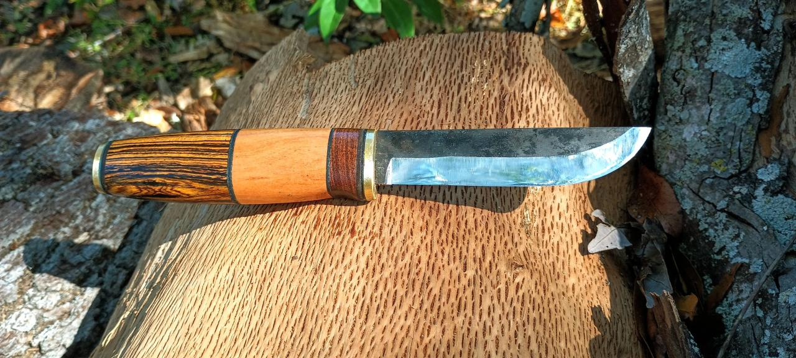

Forged in Tradition
Hominy House began with a simple passion for the art of bladesmithing and a deep respect for the tools that connect us to the natural world.
Every knife is more than just an instrument; it's a piece of functional art, designed to be passed down through generations. We believe in slow craftsmanship—taking the time to select the finest steels and most beautiful handles.
From our workshop to your hands, each piece carries the spirit of the outdoors and the precision of modern design.